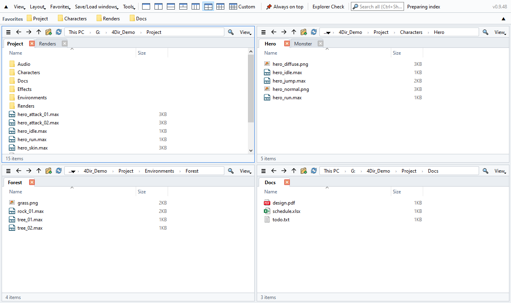
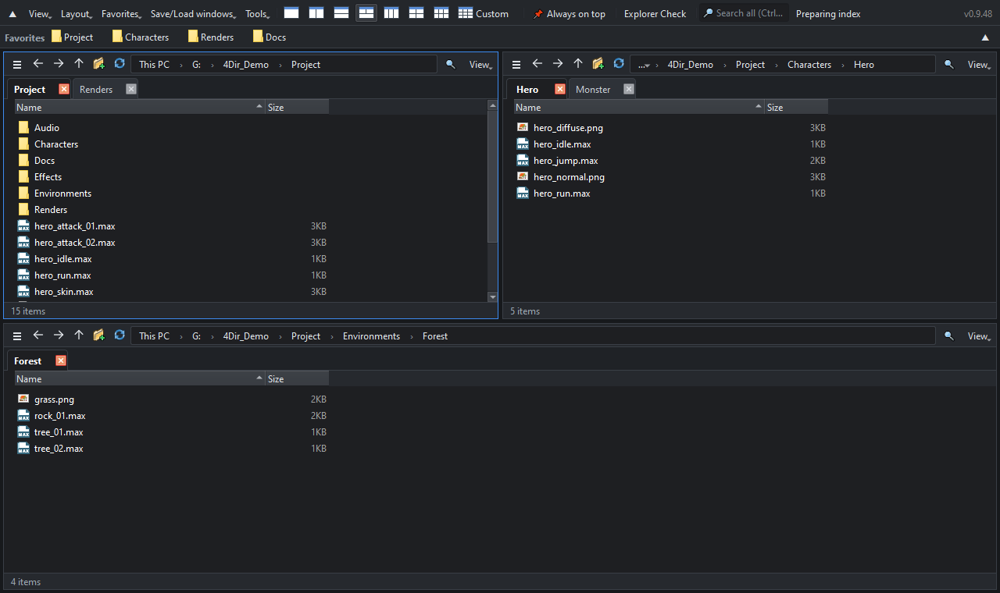

Up to 20 panes. Tabs in every pane. Light on your PC.
A free, portable file manager for Windows 10/11. No installation — unzip and run.
Windows 10/11 64-bit · 33 MB · 2026-10-21 · free

Features
Up to 20 panes
1, 2, 3, 4 or 6 pane layouts with one click, or any grid up to 5 × 4. Every pane has its own tabs.
Stays out of the way
Folders are read directly, without the heavy Windows shell view. No timers or polling when idle — safe to keep open next to 3ds Max, games or other heavy apps.
Instant search
Type to search every file name on your drives. Its own index updates in real time — no admin rights needed.
SVN status at a glance
Modified / added / conflict badges read straight from .svn — folders turn red when something inside changed. Git and Perforce through Windows overlays.
Feels like Explorer
Same keyboard shortcuts, the full Windows right-click menu, drag & drop to and from Explorer and other apps.
Portable and private
Settings stay in the 4Dir folder. Light/dark theme, 10 languages, batch rename, session restore and an Explorer health check built in.

How to install
- Download the zip with the button above (or from GitHub Releases). The green “Code → Download ZIP” on GitHub is source code only and won't run.
- Right-click the zip → Properties → check Unblock → OK. (Otherwise Windows shows a security warning every time.)
- Extract it anywhere and double-click 4Dir.vbs.
If Windows SmartScreen appears: click More info → Run anyway. 4Dir is new and not yet code-signed; the source code is public.
Verify the download (optional)
In Command Prompt run certutil -hashfile 4Dir_v0.9.52.zip SHA256 — the result must match:
739b91052d25a8562e088da009014e0748503d50a71488ee956225c260e92d8f
Support 4Dir
4Dir is free and has no ads. If it saves you time, a small donation keeps updates coming.
FAQ
Is it really free?
Yes. 4Dir is free and open source (GPL-3.0). No ads, no account, no trial.
Does it send any data?
No personal data. It only checks once a day whether a new version exists (you can turn this off in Tools).
Something went wrong?
Tools → Save log for problem report, then open an issue on GitHub with the zip file.